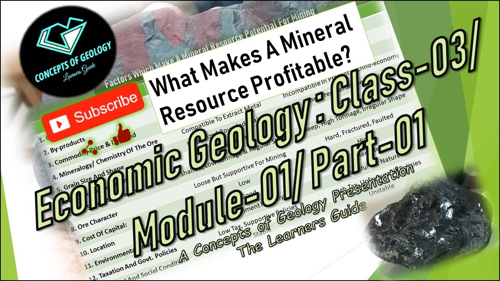

Welcome to Profitable Deposit Perth
Types of Copper Deposits in the World | An Investor's Perspective | INN
2020.12.04 10:01Copper
Investing News . Login Search My INN COPPER NICKEL IRON LEAD ZINC Precious Metals Base Metals Battery Metals Metals Stocks Free Investor Reports COPPER NICKEL IRON LEAD ZINC Precious Metals Base Metals Battery Metals Metals Stocks Free Investor ReportsTypes of Copper Deposits in the World
Priscila Barrera - September 8th, 2020Different types of copper deposits can be found around the world, and being aware of their characteristics can be beneficial for investors.
How to Invest in Copper How to Invest in Copper 7 Basic Copper Facts for Investors A Look at Historical Copper Prices The Copper Price Today: A Brief Overview LME Copper vs. COMEX Copper What are Copper Futures? 3 Copper ETFs and ETNs Top Copper Production by Country 5 Top Copper Reserves by Country Economics of the Copper Scrap Market Is Peak Copper Coming? Types of Copper Deposits in the World Copper Ore Types: Sulfides vs. Oxides Copper Refining: From Ore to Market
Copper mineralization occurs in many forms and in a variety of geological settings . As such, there are various factors to consider when determining the value of different types of copper deposits.
Historically, the world’s most profitable copper mines have been large-scale porphyry deposits with chalcopyrite mineralization extracted via open-pit mining. While they do not have the highest grades of ore and generally have more expensive refining costs, they tend to have large mineral resources .
The biggest copper-producing mine in the world is currently the Escondida mine in Chile , which is jointly owned by BHP (NYSE: BHP ,ASX:BHP,LSE:BHP) and Rio Tinto (NYSE: RIO ,ASX:RIO,LSE:RIO). Escondida means “hidden” in Spanish, and the deposit was given the name because it has no outcrops; the main orebody is hidden below hundreds of meters of overburden.
As Copper Rebounds, Get our Free Copper Stocks Report
Read your FREE 2020 report today for stocks, expert interviews and more
Give me my free report!Copper production figures can change rapidly, but in the 2018 financial year, Escondida’s total production reached 1,135 kilotonnes. The mine has processed more than 2 billion tonnes of ore through leaching and flotation since opening more than 25 years ago. Today it accounts for almost 5 percent of worldwide copper output.
Types of copper deposits: Determining value
As mentioned, there are many factors to look at when determining the value of a copper deposit. Among other things, companies must consider grade, refining costs, the estimated copper resource and the ease at which the copper can be mined. Here’s a brief overview of five things that are important to think about when finding the value of a copper deposit.
1. Types of copper deposits
Porphyry copper deposits are low grade, but are important sources of copper because they can be worked at a large scale for low costs. They typically contain between 0.4 and 1 percent copper in concert with smaller amounts of other metals, such as molybdenum , silver and gold . Porphyry copper mineral deposits are usually massive, with extraction taking place by open-pit mining.
Copper-bearing sedimentary rocks are the second most important type of copper deposit, accounting for approximately one-quarter of the world’s identified copper deposits. Other types of copper deposits found throughout the world include:
Volcanogenic massive sulfide (VMS) ore deposits , a source of copper sulfide formed through hydrothermal events in submarine environments. Iron oxide-copper-gold (IOCG) ore deposits are highly valuable concentrations of copper, gold and uranium ores. Copper skarn deposits , which in a broad sense are formed through chemical and physical mineral alterations created when two separate lithologies make contact.Looking for Base Metals Stocks?
Read our stock report on base metals investing
Give me my free report! 2. Average grade
Grade is a significant factor in how much a deposit is worth. Most copper ores contain only a small percentage of copper metal bound up within valuable ore minerals. The remainder of the ore is simply unwanted rock. Exploration companies conduct drill programs to extract samples of rock called cores. The cores are then subjected to chemical assays to determine the “grade” of a deposit. Grade effectively is a measure of the concentration of metal.
Copper deposit grades are usually expressed as a weight percentage of the total rock. For example, 1,000 kilograms of copper ore containing 300 kilograms of copper metal has a grade of 30 percent. When metal is at a much lower concentration, it may be described in terms of parts per million. However, with copper, grade is the common convention.
Exploration companies estimate grade through drilling and assaying. The average grade of copper ores in the 21st century is below 0.6 percent copper , with the proportion of ore minerals being less than 2 percent of the total volume of the ore rock.
Investors should approach grade estimates with a critical eye. When an exploration company issues grade statements, investors should be sure to compare them to the total depth of the drill core used to determine the grade. A high grade at a low depth can have far less value than a mediocre grade consistent through a deep core. Corebox is a great tool for keeping informed.
3. Mining costs
The largest, most profitable copper mines have been open-pit mines , although underground copper mines are not uncommon. Of particular importance in an open-pit mine is a resource that is relatively close to the surface. Mining companies are particularly interested in the amount of overburden, which is the amount of worthless rock and soil on top of the copper resource. This material must be removed to access the resource. Escondida, mentioned above, has a resource that is covered by a large amount of overburden , but the deposit is still economic due to the large size of the resource beneath.
4. Types of ore
There are two distinct types of copper deposits: sulfide ore and oxide ore . Currently, the most common source of copper ore is the sulfide ore mineral chalcopyrite, which accounts for about 50 percent of copper production. Sulfide ores are processed via froth floatation to obtain copper concentrate. Copper ores containing chalcopyrite can produce a concentrate with 20 to 30 percent copper in concentrate.
As Copper Rebounds, Get our Free Copper Stocks Report
Read your FREE 2020 report today for stocks, expert interviews and more
Give me my free report!The more valuable chalcocite concentrates typically grade between 37 and 40 percent copper in concentrate due to the fact that chalcocite contains no iron. Chalcocite has been mined for centuries, and is one of the most profitable copper ores. The reason for that is its high copper content and the ease at which the copper it contains can be separated from sulfur.
It is not, however, the primary copper ore today. Copper oxide ores are leached with sulfuric acid to liberate the copper minerals into a solution of sulfuric acid laden with copper sulfate solution. The copper sulfate solution (called the pregnant leach solution) is then stripped of copper via a solvent extraction and electrowinning process, which is more economical compared to froth flotation.
5. Primary and secondary ores
All copper mines have different mineral assemblages. The primary assemblage is the mineralization type that is most prevalent. Most types of copper deposits also have secondary ores, however, and they can add a great deal of value to a deposit. The Escondida mine is primarily a chalcopyrite porphyry deposit overlain by secondary oxides. It is important for companies not to discount secondary mineralization.
Types of copper deposits: Conclusion
While there are other factors to consider when valuing a copper deposit, the upshot is that a world-class copper deposit holds a copper resource whose value far exceeds the cost of mining and refining. To date, some of the biggest copper finds have been the Kennecott copper mine, a large-scale porphyry deposit, the Chuquicamata copper porphyry complex and, of course, Escondida.
This is an updated version of an article originally published by the Investing News Network in 2016.
Don’t forget to follow us @INN_Resource for real-time news updates!
Securities Disclosure: I, Priscila Barrera, hold no direct investment interest in any company mentioned in this article.
Looking for Base Metals Stocks?
Read our stock report on base metals investing
Give me my free report! Is Peak Copper Coming? Copper Ore Types: Sulfides vs. Oxides Related posts
How to Invest in Copper The Copper Price Today: A Brief Overview Ways to Invest in Lead Top Uranium Mines in the World Tags
Tags: ASX:BHP , ASX:RIO , BHP , Escondida , LSE:BHP , LSE:RIO , NYSE:BHP , NYSE:RIO 8 responses to “ Types of Copper Deposits in the World ”
Bryan Whipple says: March 22, 2017 at 8:49 am
The article “World Class Copper Deposits” includes the statement “Sulfide ores are refined by froth flotation.” I believe that in the parlance of the copper industry, froth flotation is a means of concentration, not refining, and that refining is done by electrolysis.
Log in to Reply Priscila Barrera says: March 22, 2017 at 10:40 amHi Bryan,
Thank you for pointing that out. The article has been updated.
Log in to Reply Bryan Whipple says: March 22, 2017 at 8:49 amThe article “World Class Copper Deposits” includes the statement “Sulfide ores are refined by froth flotation.” I believe that in the parlance of the copper industry, froth flotation is a means of concentration, not refining, and that refining is done by electrolysis.
Log in to Reply Priscila Barrera says: March 22, 2017 at 10:40 am Hi Bryan,
Thank you for pointing that out. The article has been updated.
Many thanks for kind info.
Log in to Reply ali says: August 26, 2016 at 11:38 amMany thanks for kind info.
Log in to Reply RAYMOND KALUMYA says: November 11, 2015 at 5:04 amSo interested to be kept abreast with latest world Copper information. I am a metallurgist practicing in Zambia.
Log in to Reply RAYMOND KALUMYA says: November 11, 2015 at 5:04 amSo interested to be kept abreast with latest world Copper information. I am a metallurgist practicing in Zambia.
Log in to ReplyLeave a Reply Cancel reply
You must be logged in to post a comment.
×See our exclusive index of Copper companies on the move
EXPLORE
Free Investor Reports
Start Here! Free Reports for New InvestorsDownload free reports
Resource Investing Lithium Forecast and Stocks to Buy in 2020 The Battery Metals Market in 2020 2020 Gold Price Forecast and Gold Stocks to Watch Precious Metals Outlook 2020: CEO’s, Analysts on Gold, Silver and Platinum Silver Price Forecast and Silver Stocks INN on Tesla's Battery Day Archived - US Election 2020 and Gold Tech Investing Tech Forecast and Promising Tech Stocks To Buy Emerging Tech: Advances in AI, Virtual Reality and Mobile Outlook and Opportunities in the Gaming Industry Cleantech Market Trends and Cleantech Stocks to Buy The Blockchain Industry and Outlook Archived - Tech Shaping the Future: XFuture Conference Report 2019 Investing in Esports: Stocks, Trends and Rising Demand Life Science Investing Coronavirus Investing: An Overview for Investors Start Here - Investing in Psychedelics Life Science and Healthcare Investing in 2020 Pharmaceutical Investing Principles And Pharmaceutical Stocks To Buy Biotech Investing - Top Stocks, ETFs and Future Prospects Start Here - Investing in Biotech Start Here - Investing in Life ScienceBrowse Topics
Resource Investing Agriculture Investing Phosphate Investing Potash Investing Base Metals Investing Copper Investing Iron Investing Lead Investing Nickel Investing Zinc Investing Battery Metals Investing Cobalt Investing Graphite Investing Lithium Investing Manganese Investing Vanadium Investing Critical Metals Investing Magnesium Investing Rare Earth Investing Scandium Investing Tantalum Investing Tellurium Investing Tungsten Investing Energy Investing Oil and Gas Investing Uranium Investing Gem Investing Diamond Investing Industrial Metals Investing Aluminum Investing Chromium Investing Coal Investing Molybdenum Investing Tin Investing Precious Metals Investing Gold Investing Palladium Investing Platinum Investing Silver Investing Tech Investing 3D Printing Investing Bitcoin Investing Blockchain Investing Cleantech Investing Cloud Investing Cryptocurrencies Data Investing Emerging Tech Investing Artificial Intelligence Investing Mobile Investing Robotics Investing Fintech Investing Gaming Investing Esports Investing Nanoscience Investing Graphene Investing Nanotech Investing Security Investing Life Science Investing Biotech Investing Genetics Investing Longevity Investing Medical Device Investing Pharmaceutical Investing Psychedelics InvestingFeatured stocks
Jaeger Resources --Developing Undervalued Properties in the Bathurst Mining Camp, New Brunswick Whitehorse Gold Norden Crown Metals Mind Cure Sanatana Resources See all featured stocksInvesting News Network
Your trusted source for investing success
Manage account About Us Contact Us Disclaimer Privacy Policy Stocks Author Index Australia Investing Keyword Index Browse Topics Advertise Careers Free Report Events Partner with INNCopyright 2020 © Dig Media Inc.
Create New Password No password? Subscribe